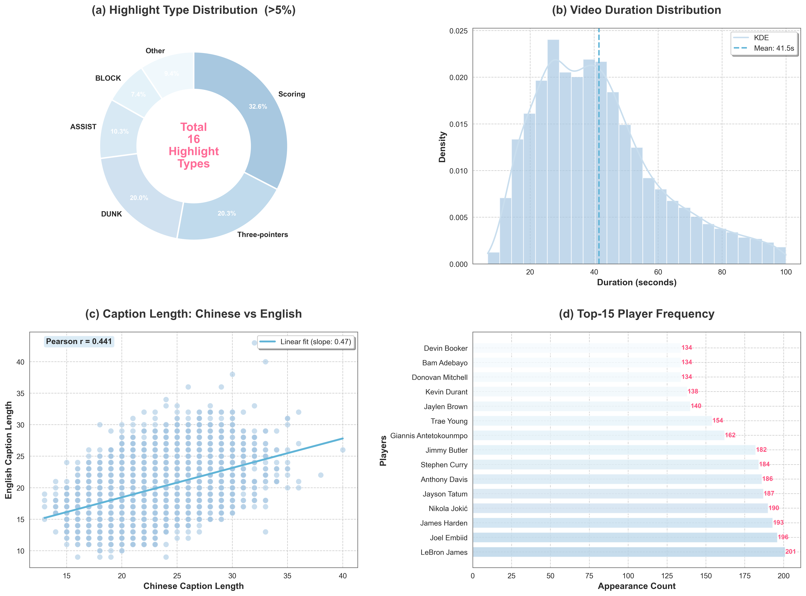
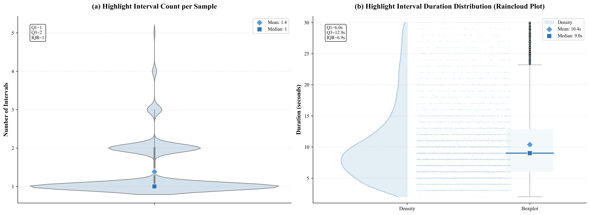
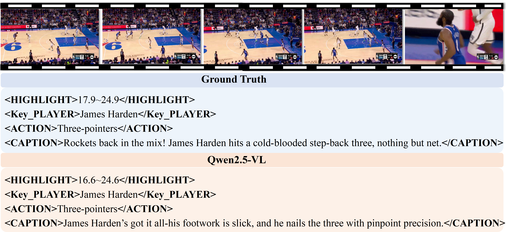

Highlight-DC: A Benchmark for Identity-aware Highlight Detection and Captioning
Abstract
Sports highlight clips, extracted from full-game footage, enable efficient content browsing and hold critical application value on social media. Existing approaches typically treat highlight detection and video captioning as separate tasks. This leads to inconsistent information and fragmented user experiences. Such limitations hinder real-world applications like automatic highlight packaging. In this paper, we propose a unified task: Identity-aware Highlight Detection and Captioning (IHDC). It requires jointly localizing exciting moments in video clips and generating engaging natural language descriptions with player identities. To support this task, we construct Highlight-DC, a large-scale benchmark comprising 9,583 basketball highlight clips from 781 NBA games. Each clip is annotated with temporal highlight intervals and paired with expressive Chinese and English captions. Unlike conventional play-by-play descriptions, our captions not only accurately depict on-court actions and player identities but also incorporate rich expressive, metaphorical, and emotional elements. We adopt Multi-modal Large Language Models (MLLMs) for joint optimization of the proposed IHDC task. Extensive experiments on various MLLMs show that joint optimization of temporal localization and captioning consistently improves performance. Nevertheless, existing models still struggle with this challenging task. The dataset and code will be made publicly available.
Dataset Statistics & Visualizations

Distribution of highlight durations, player mentions, and caption lengths in Highlight-DC.

Raincloud visualization of highlight interval distributions across the dataset.

Qualitative examples of highlight detection and identity-aware captioning results.
Paper
BibTeX
@article{HighlightDC2026,
title={Highlight-DC: A Benchmark for Identity-aware Highlight Detection and Captioning},
author={Haoying Sun and Shuyi Li and Zeyu Xi and Yunhao Zhao and Lifang Wu and Liang Wang and Changwen Chen},
year={2026},
url={https://sunhaoying97.github.io/Highlight-DC/}
}